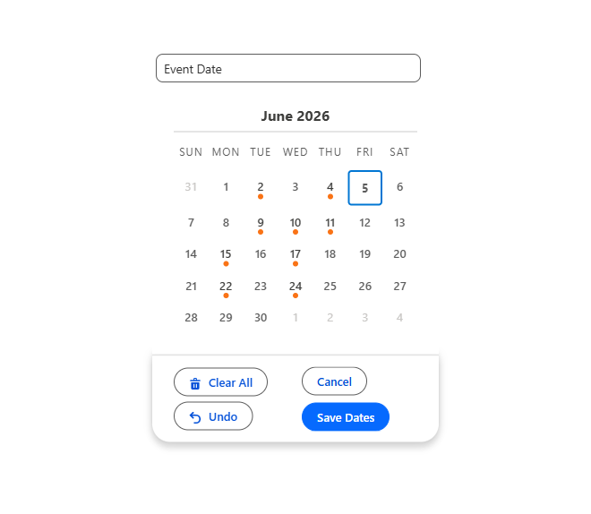

App Pages, Home Pages & Experience Sites
MultiDatePick works on every Lightning surface — not just record pages. The trick is one property: Static Record Id. Here's how it works, the exact requirements for the Save button, surface-by-surface setup, use cases, and troubleshooting.
Why these surfaces are different
MultiDatePick saves the dates you pick as records on a related object, each one linked back to a parent record. The component just needs to know which parent.
- On a record page (e.g. an Event record), Salesforce automatically hands the component the current record's Id — the
recordId. Nothing extra to configure; it just works. - On an App Page, Home Page, or Experience Site, there is no "current record." Salesforce passes nothing. With no parent, the component has nowhere to save — so it hides the Save button by design rather than show one that fails on click.
Static Record Id property. You paste a specific parent record's Id into it, and the component behaves exactly as if it were sitting on that record's page. (It's "Static Record Id" — a property you set in the builder. It is not a "Static Resource," which is a separate Salesforce feature for uploaded files.)Find Static Record Id in the Lightning App Builder property panel after you drag MultiDatePick onto an App Page, Home Page, or Experience Builder page.
Static Record Id vs. a Flow — when to use which
Static Record Id points the component at one fixed parent, so every visitor sees the same record. That's perfect for some cases and wrong for others. When the record needs to change per user or per visit, drive it from a Screen Flow instead — drop the component on a Flow screen and its recordId becomes an input you bind to a variable the Flow resolves at runtime.
Use Static Record Id when the record is the same for everybody
- A public booking page — a guest-facing "request an appointment" page where every booking attaches to the same parent record (one office, location, or resource). A hardcoded Id is exactly right.
- One org-wide calendar — a single "Company Closures" record, or one shared resource everyone books, that never changes per user.
- A fixed dashboard anchor on an App or Home page that always points at the same master record.
Rule of thumb: reach for Static Record Id when the answer to "whose record is this?" is "the same one for everybody."
Use a Flow when the record is chosen at runtime
- Per-user records — each person sees only their own (e.g. every contractor lands on their own PTO calendar). The Flow does a Get Records where the owner or a linked Contact =
{!$User.Id}, stores the Id, and passes it to the component. - URL-driven — a Flow input variable reads
?id=…from the link, so one page serves many records (works for guests too — no login needed). - Pick-first — screen 1 lets the user search or choose (an employee, a room, a client); screen 2 shows that record's calendar.
$User) resolution doesn't apply. Either share one record via Static Record Id, or drive it from a URL parameter through a Flow. True per-user calendars need logged-in users.What makes the Save button appear
The Save button shows only when all four of these are in place. Miss one and it stays hidden:
| # | Requirement | On a Record Page | On App / Home / Experience |
|---|---|---|---|
| 1 | Parent record context | Automatic (recordId) | Set Static Record Id |
| 2 | Related Object API Name | Required | Required |
| 3 | Date Field API Name | Required | Required |
| 4 | Relationship Field API Name | Required | Required |
Surface-specific configuration
The four requirements above are the same everywhere. What differs is where you place it and who needs access.
App Page
A standalone page inside a Lightning app — great as a shared "hub."
- Build in Lightning App Builder → New → App Page.
- Set
Static Record Id+ the three field properties. - Activate → add it to one or more Lightning apps (it becomes a tab).
- Users need the MultiDatePick permission set for object access.

Home Page
A widget on the Lightning Home Page — a personal or team launchpad.
- Build in Lightning App Builder → New → Home Page.
- Set
Static Record Id+ the three field properties. - Activate as the org default Home page, or per-app via App Manager → Pages.
- Tip:
preloadMode = readonlyturns it into a read-only "what's scheduled" view.

Experience Site
A page in an Experience Cloud (community) site — for customers, partners, or members.
- Place it in Experience Builder (it appears under Custom Components).
- Set
Static Record Id+ the three field properties. - Access is the key step: the site's member profile (or the guest user, for public pages) needs read/create on the objects and fields — grant it via the profile or a permission set, plus a sharing rule so members can see/create the records.
- Publish the site after activating.

parentRecordIdField property to resolve the parent from a lookup. See the Flow Cheat Sheet.Use cases for off-record-page placement
Four common patterns that live on an App Page, Home Page, or Experience Site rather than a record page:
1. Internal Booking Hub · App Page
A company-wide "Book a Room / Reserve Equipment" app page. Everyone lands on the same Booking calendar, picks dates and time slots, and the bookings roll up to one shared parent record. Static Record Id points at that central record; capacityField shows live "3/10" availability so two people don't grab the same slot.
2. Customer Self-Service Scheduling · Experience Site
Customers log into your community and choose appointment, delivery, or service dates themselves — no phone call. The Booking or Date Time component sits on an Experience page; Static Record Id (or a Flow) ties each selection to the customer's Case or Order. Member-profile access + a sharing rule let them create the records.
3. Personal Availability Widget · Home Page
A "Mark My Availability" or "Request Time Off" widget right on the Lightning Home Page. Employees tap the dates they're out, and the Date component writes them to a team or HR record via Static Record Id. Add statusColors so Pending vs. Approved requests read at a glance.
4. Event & Cohort Registration · Experience Site / App Page
Attendees or members pick the sessions, classes, or cohort dates they want to join. The Date Time component on a community or app page records each selection against the Event or Campaign through Static Record Id. maxSelections caps how many sessions one person can register for.
5. Volunteer & Shift Sign-Up · Experience Site
Nonprofits and community teams let members claim volunteer shifts or open slots themselves on a login (or public) community page. The Booking or Date Time component shows live "spots left" through capacityField, and statusColors mark Open vs. Full at a glance. Member-profile access plus a sharing rule let volunteers create their own sign-up records against the shared parent via Static Record Id.
6. Project Milestone Planning · App Page
A shared project-planning app page where the team marks milestone, sprint, or release dates against a central Project record through Static Record Id. The Date or Date Time component with statusColors makes Planned vs. In Progress vs. Done read instantly, and twoMonthView puts two months on one screen.
Troubleshooting
The Save button never appears
One of the four requirements is missing. On App/Home/Experience, the usual culprit is an empty Static Record Id. Confirm the Related Object, Date Field, and Relationship Field properties are filled too.
Calendar loads, but saving does nothing / errors
The user can't access the objects. Assign the MultiDatePick permission set (or, on an Experience Site, grant the member/guest profile read/create on the objects and fields).
"Field does not exist" on save
The object or field API name doesn't match the schema — usually a typo or the wrong field. Use the exact API name from Setup → Object Manager. You only need a namespace prefix when pointing at an object from another installed package (e.g. acme__Visit_Date__c); your own objects — and the bundled sample objects — don't require one.
Community members can't see records they created
Experience Site sharing. Add a sharing rule (or set org-wide defaults) so the member or guest user can see the records on the related object.
Saves, but nothing shows when they refresh the page
Turn on preloadExistingDates so the component loads existing records for that parent each time it opens.
Static Record Id "isn't valid"
It must be a real 15- or 18-character Id of the parent object — the one your Relationship Field API Name points to — not some other record.
Have another issue that's not covered here?
Email your questions here — happy to help.